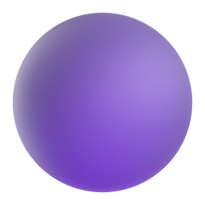
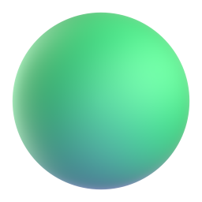
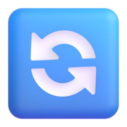

Вхід в додаток
Потрібна авторизація
Введіть ключ доступу:
Перший запуск
Налаштування TurboSMS

Ultranet

ISP Energy
UltraEnergy SMS Tool
Шаблон:
Номер телефону:
Сума (грн):
Текст SMS:
Символів:
0
(залишилось:
160
)
СМС:
0
шт
≈
0.00
₴
Налаштування
Керування розширенням
Налаштування API TurboSMS
Ultranet
ISP Energy
Вартість 1 SMS (грн)
●
Ultranet
●
ISP Energy
Зовнішній вигляд
Тема оформлення:
Поведінка вікна
Закривати вікно після відправки
Меню
Налаштування
Закріпити на панелі

Перезавантажити
Нова версія
✦
v
...
 Перший запуск
Перший запуск